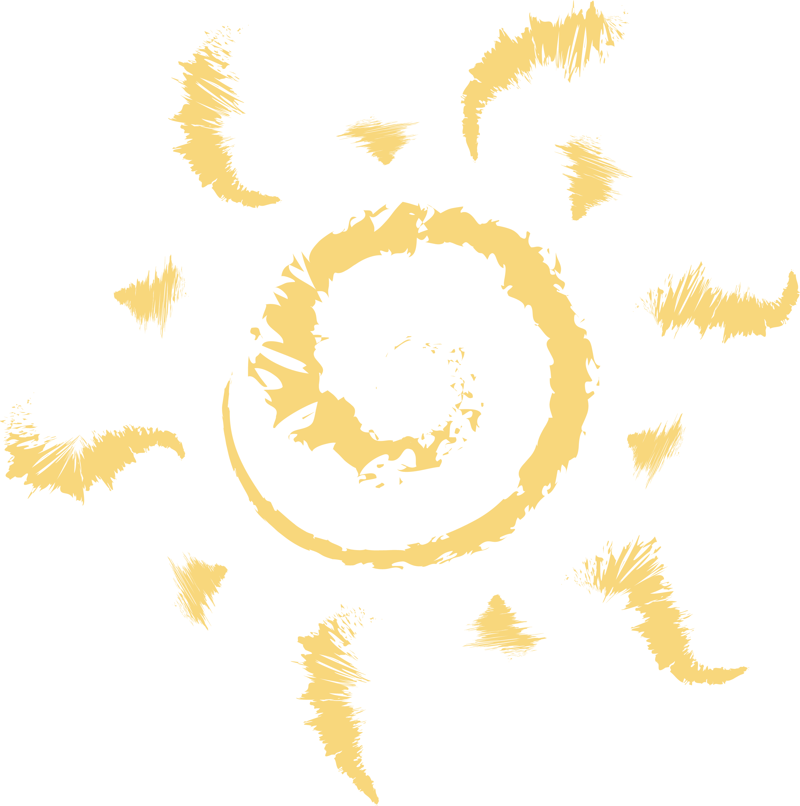

Ver
Imagem e linguagem visual. O mundo como superfície e profundidade.
Observamos o mundo como ele é: contraditório, vivo, urgente. Transformamos essa matéria bruta em conteúdo, criações, produtos e experiências.
A Visão do Caos nasceu da vontade de fazer diferente em uma internet saturada de conteúdo feito para engajamento, marcas tentando parecer descoladas e opiniões simplificadas.
Através da música, das artes visuais, do audiovisual, da escrita e da experimentação, conectamos artistas, ideias e públicos em torno de uma mesma proposta: enxergar o mundo de outro jeito.
Não entregamos respostas prontas. Propomos perguntas, perspectivas e formas de criação que atravessam.
Valorizar quem cria e a perspectiva de quem cria.
Permitir diferentes linguagens, formatos e pensamentos.
Não produzir apenas por produzir. Existe algo por trás.
Autonomia criativa e produção cultural fora do circuito óbvio.
Cada território é uma forma de olhar. Juntos, eles compõem a visão.
Imagem e linguagem visual. O mundo como superfície e profundidade.
Ideias e cultura. O que move a cidade, o trabalho, o comportamento.
Música e áudio. O que ecoa, o que atravessa, o que fica.
O território transversal. Onde o que não cabe encontra seu lugar.
A materialização. Objetos, coleções, peças que carregam conceito.
Não existe fórmula, existe método. Cada projeto nasce de uma observação e termina em algo que pode ser visto, ouvido, lido ou tocado.
A matéria bruta. A cidade, a vida cotidiana, as contradições, os conflitos.
→O olhar que interpreta. O que se vê quando se observa com atenção e curiosidade.
→A transformação. Dar forma ao que foi percebido através de linguagens e experimentação.
→O que chega no outro. Conteúdo, obra, produto, experiência: algo que atravessa.
Um ensaio sobre como a rua atravessa a criação contemporânea.
Um levantamento do cartazismo independente que circula pela cidade.
Camisetas, pôsteres, prints, adesivos e objetos autorais. Cada peça nasce de um processo, carrega uma história e se relaciona com uma obra, um artista ou uma ideia.
Ver coleção atualAlgodão 100% · Serigrafia artesanal
Papel offset 180g · 50x70cm
Impressão giclée · 30x40cm
Vinil · Pacote com 5 unidades

A Visão do Caos é um território aberto para artistas, designers, músicos, escritores e criadores independentes que querem ser vistos sem abrir mão da própria identidade.